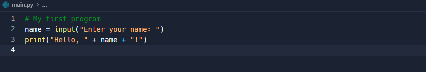
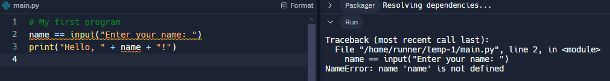
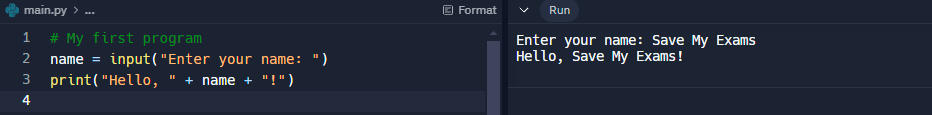

Levels of Programming Languages
What is a programming language?
Cambridge IGCSE 0478 expects you to explain the difference between low-level and high-level languages*, and* name advantages and disadvantages of each. This page is structured to mirror the format used in real exam questions.
- A programming language acts as a bridge between what humans understand and what a computer understands
- Early computers were complex and instructions would have to be in written in binary code, 0s and 1s
- This process was slow, taking days to program simple tasks
- Over time, new generations of programming languages have enabled people to become faster and more efficient at writing programs as they resemble human language
- Generations of programming languages can be split in to two categories:
- Low-level
- First generation
- Second generation
- High-level
- Third generation
- Low-level
Low-Level Languages
What is a low-level language?
- A low-level language is a programming language that directly translates to machine code understood by the processor
- Low-level languages allow direct control over hardware components such as memory and registers
- These languages are written for specific processors to ensure they embed the correct machine architecture
First generation
- Machine code is a first-generation language
- Instructions are directly executable by the processor
- Written in binary code
Second generation
- Assembly code is a second-generation language
- The code is written using mnemonics, abbreviated text commands such as LDA (Load), STA(Store)
- Using this language programmers can write human-readable programs that correspond almost exactly to machine code
- One assembly language instruction translates to one machine code instruction
- Needs to be translated into machine code for the computer to be able to execute it
| Advantages | Disadvantages |
|---|---|
| Complete control over the system components | Difficult to write and understand |
| Occupy less memory and execute faster | Machine dependent |
| Direct manipulation of hardware | More prone to errors |
| Knowledge of computer architecture is key to program effectively |
When describing low-level languages, don’t just say “they are faster”, you must say they allow direct control over hardware or memory*, which leads to greater efficiency. Be specific to earn the mark.*
High-Level Languages
What is a high-level language?
- A high-level programming language uses English-like statements to allow users to program with easy to use code
- High-level languages allow for clear debugging and once programs are created they are easier to maintain
- High level languages were needed due to the development of processor speeds and the increase in memory capacity
- One instruction translates into many machine code instructions
- Needs to be translated into machine code for the computer to be able to execute it
- Examples of high-level languages include:
- Python
- Java
- Basic
- C++
| Advantages | Disadvantages |
|---|---|
| Easier to read and write | The user is not able to directly manipulate the hardware |
| Easier to debug | Needs to be translated to machine code before running |
| Portable so can be used on any computer | The program may be less efficient |
| One line of code can perform multiple commands |
Students sometimes confuse machine code and assembly. Remember:
Machine code = binary (1st generation)
Assembly = mnemonics (2nd generation, needs assembler)
Assembly Language
What is assembly language?
- Assembly language is a second-generation, low-level language designed to simplify the writing of machine code instructions for programmers
- Programmers use assembly language for the following reasons:
- Need to make use of specific hardware or parts of the hardware
- To complete specific machine-dependent instructions
- To ensure that too much space is not taken up in RAM
- To ensure code can be completed much faster
- Assembly languages allow programmers to program with mnemonics, e.g.
- LDA Load - this will ensure a value is added to the accumulator
- ADD Addition - this will add the value input or loaded from memory to the value in the accumulator
- STO Store - stores the value in the accumulator in RAM
- Assembly language allowed continuation of working directly with the hardware but removed an element of complexity
- A mnemonic is received by the computer and it is looked up within a specific table
- An assembler is needed to check the word so that it can be converted into machine code
- If a match from the word is found (e.g. STO),the word is replaced with the relevant binary code to match that sequence
Complete the table to identify whether each example of computer code is High-level, Assembly language or Machine code
| Computer code | High-level | Assembly | Machine code |
|---|---|---|---|
101101110011011011100110 |
|||
FOR X = 1 to 10PRINT xNEXT X |
|||
INP XSTA XLDA Y |
|||
| [3] |
Answer
| Computer code | High-level | Assembly | Machine code |
|---|---|---|---|
101101110011011011100110 |
X [1 mark] | ||
FOR X = 1 to 10PRINT xNEXT X |
X [1 mark] | ||
INP XSTA XLDA Y |
X [1 mark] |
Translators, Compilers & Interpreters
What is a translator?
- A translator is a program that translates program source code into machine code so that it can be executed directly by a processor
- Low-level languages such as assembly code are translated using an assembler
- High-level languages such as Python are translated using a compiler or interpreter
What is a compiler?
- A compiler translates high-level languages into machine code all in one go
- Compilers are generally used when a program is finished and has been checked for syntax errors
- Compiled code can be distributed (creates an executable) and run without the need for translation software
- If compiled code contains any errors, after fixing, it will need re-compiling
| Advantages | Disadvantages |
|---|---|
| Speed of execution | Can be memory intensive |
| Optimises the code | Difficult to debug |
| Original source code will not be seen | Changes mean it must be recompiled |
| It is designed solely for one specific processor |
What is an interpreter?
- An interpreter translates high-level languages into machine code one line at a time
- Each line is executed after translation and if any errors are found, the process stops
- Interpreters are generally used when a program is being written in the development stage
- Interpreted code is more difficult to distribute as translation software is needed for it to run
| Advantages | Disadvantages |
|---|---|
| Stops when it finds a specific syntax error in the code | Slower execution |
| Easier to debug | Every time the program is run it has to be translated |
| Require less RAM to process the code | Executed as is, no optimisation |
Tools & Facilities in IDEs
What is an IDE?
- An Integrated Development Environment (IDE) is software designed to make writing high-level languages more efficient
- IDEs include tools and facilities to make the process of creating/maintaining code easier, such as:
- Editor
- Error diagnostics
- Run-time environment
- Translators
Editor

- An editor gives users an environment to write, edit and maintain high-level code
- Editors can provide:
- Basic code formatting tools - changing the font, size of the font and making text bold etc
- Prettyprint - using colour to make it easier to identify keywords, for example ’
print', ’input’ and ’if’ in Python - Code editing - auto-completion and auto-correction of code, bracket matching and syntax checks
- Commenting code - allows sections of code to be commented out easily to stop it from being run or as comments on what the program is doing

- Tools that help to identify, understand and fix errors in code, such as:
- Identifying errors - highlight particular areas of code or provide direct error messages where the error may have appeared e.g. indentation errors etc
- Debugger - provide a ‘step through’ command which provides step by step instructions and shows what is happening to the code line by line, useful for finding logic errors
Run-time environment

- Gives users the ability to run and see the corresponding output of a high-level language
Translator
- Built in to compile or interpret code without the need for an extra piece of software